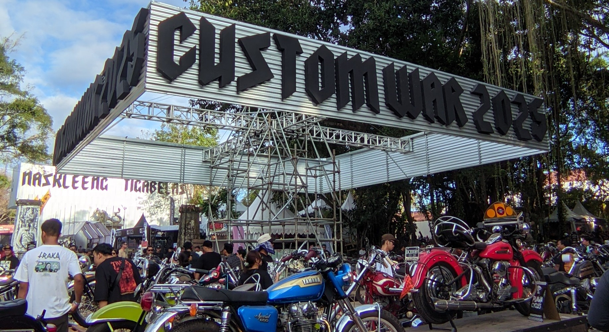

Website Kastem Kalcer
Kastem motor adalah solusi untuk khalayak muda buat tetap jago dalam bekerja, bergaya juga buat keluarga dengan kecepatan yang tydak kalah dengan yang lainnya
CUSTOM CULTURE INDONESIA
Custom War telah menjadi salah satu pertunjukan budaya kustom yang paling dinantikan di Pulau Dewata Bali. Acara ini hadir sebagai platform yang mendorong serta mewadahi para penggemar budaya kustom untuk berbagi ide, inspirasi, dan semangat dalam dunia custom culture. Kini acara ini dikenal sebagai salah satu ikon penting dalam komunitas budaya kustom di Indonesia.
Rangkaian acara menampilkan beragam elemen khas dunia kustom, mulai dari motor dan hot rod hasil rakitan bengkel, kendaraan antik dan langka milik para kolektor, karya seniman pinstripe dan area junkyard. Tak ketinggalan berbagai atraksi seru seperti balap chopper di pantai, olahraga lari, serta aktivitas hiburan lainnya seperti penampilan band-band terbaik.
Menariknya acara Custom War dilaksanakan selalu ada hadiah utama yang paling dinantikan sebuah motor kustom hasil karya Kedux Garage yang juga adalah member dari NK13. Semua elemen ini berpadu menjadi satu pengalaman tak terlupakan untuk merayakan semangat dan kebebasan dalam budaya kustom. Custom War 2025 akan hadir dengan banyak kegiatan baru yang berkesan bagi komunitas motor dan pengunjung.